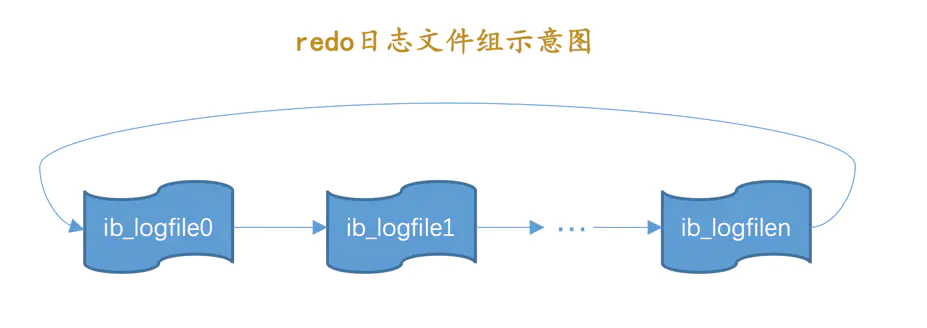

redo日志（下）
标签： MySQL是怎样运行的
redo日志文件
redo日志刷盘时机
我们前边说mtr运行过程中产生的一组redo日志在mtr结束时会被复制到log buffer中，可是这些日志总在内存里呆着也不是个办法，在一些情况下它们会被刷新到磁盘里，比如：
-
log buffer空间不足时log buffer的大小是有限的（通过系统变量innodb_log_buffer_size指定），如果不停的往这个有限大小的log buffer里塞入日志，很快它就会被填满。设计InnoDB的大叔认为如果当前写入log buffer的redo日志量已经占满了log buffer总容量的大约一半左右，就需要把这些日志刷新到磁盘上。 -
事务提交时
我们前边说过之所以使用
redo日志主要是因为它占用的空间少，还是顺序写，在事务提交时可以不把修改过的Buffer Pool页面刷新到磁盘，但是为了保证持久性，必须要把修改这些页面对应的redo日志刷新到磁盘。 -
后台线程不停的刷刷刷
后台有一个线程，大约每秒都会刷新一次
log buffer中的redo日志到磁盘。 -
正常关闭服务器时
-
做所谓的
checkpoint时（我们现在没介绍过checkpoint的概念，稍后会仔细唠叨，稍安勿躁） -
其他的一些情况...
redo日志文件组
MySQL的数据目录（使用SHOW VARIABLES LIKE 'datadir'查看）下默认有两个名为ib_logfile0和ib_logfile1的文件，log buffer中的日志默认情况下就是刷新到这两个磁盘文件中。如果我们对默认的redo日志文件不满意，可以通过下边几个启动参数来调节：
-
innodb_log_group_home_dir该参数指定了
redo日志文件所在的目录，默认值就是当前的数据目录。 -
innodb_log_file_size该参数指定了每个
redo日志文件的大小，在MySQL 5.7.21这个版本中的默认值为48MB， -
innodb_log_files_in_group该参数指定
redo日志文件的个数，默认值为2，最大值为100。
从上边的描述中可以看到，磁盘上的redo日志文件不只一个，而是以一个日志文件组的形式出现的。这些文件以ib_logfile[数字]（数字可以是0、1、2...）的形式进行命名。在将redo日志写入日志文件组时，是从ib_logfile0开始写，如果ib_logfile0写满了，就接着ib_logfile1写，同理，ib_logfile1写满了就去写ib_logfile2，依此类推。如果写到最后一个文件该咋办？那就重新转到ib_logfile0继续写，所以整个过程如下图所示：

总共的redo日志文件大小其实就是：innodb_log_file_size × innodb_log_files_in_group。
!小贴士：如果采用循环使用的方式向redo日志文件组里写数据的话，那岂不是要追尾，也就是后写入的redo日志覆盖掉前边写的redo日志？当然可能了！所以设计InnoDB的大叔提出了checkpoint的概念，稍后我们重点唠叨～
redo日志文件格式
我们前边说过log buffer本质上是一片连续的内存空间，被划分成了若干个512字节大小的block。将log buffer中的redo日志刷新到磁盘的本质就是把block的镜像写入日志文件中，所以redo日志文件其实也是由若干个512字节大小的block组成。
redo日志文件组中的每个文件大小都一样，格式也一样，都是由两部分组成：
-
前2048个字节，也就是前4个block是用来存储一些管理信息的。
-
从第2048字节往后是用来存储
log buffer中的block镜像的。
所以我们前边所说的循环使用redo日志文件，其实是从每个日志文件的第2048个字节开始算，画个示意图就是这样：
普通block的格式我们在唠叨log buffer的时候都说过了，就是log block header、log block body、log block trialer这三个部分，就不重复介绍了。这里需要介绍一下每个redo日志文件前2048个字节，也就是前4个特殊block的格式都是干嘛的，废话少说，先看图：
从图中可以看出来，这4个block分别是：
-
log file header：描述该redo日志文件的一些整体属性，看一下它的结构：各个属性的具体释义如下：
属性名 长度（单位：字节） 描述 LOG_HEADER_FORMAT4redo日志的版本，在MySQL 5.7.21中该值永远为1LOG_HEADER_PAD14做字节填充用的，没什么实际意义，忽略～ LOG_HEADER_START_LSN8标记本 redo日志文件开始的LSN值，也就是文件偏移量为2048字节初对应的LSN值（关于什么是LSN我们稍后再看哈，看不懂的先忽略）。LOG_HEADER_CREATOR32一个字符串，标记本 redo日志文件的创建者是谁。正常运行时该值为MySQL的版本号，比如："MySQL 5.7.21"，使用mysqlbackup命令创建的redo日志文件的该值为"ibbackup"和创建时间。LOG_BLOCK_CHECKSUM4本block的校验值，所有block都有，我们不关心 !小贴士： 设计InnoDB的大叔对redo日志的block格式做了很多次修改，如果你阅读的其他书籍中发现上述的属性和你阅读书籍中的属性有些出入，不要慌，正常现象，忘记以前的版本吧。另外，LSN值我们后边才会介绍，现在千万别纠结LSN是个啥。 -
checkpoint1：记录关于checkpoint的一些属性，看一下它的结构：各个属性的具体释义如下：
属性名 长度（单位：字节） 描述 LOG_CHECKPOINT_NO8服务器做 checkpoint的编号，每做一次checkpoint，该值就加1。LOG_CHECKPOINT_LSN8服务器做 checkpoint结束时对应的LSN值，系统崩溃恢复时将从该值开始。LOG_CHECKPOINT_OFFSET8上个属性中的 LSN值在redo日志文件组中的偏移量LOG_CHECKPOINT_LOG_BUF_SIZE8服务器在做 checkpoint操作时对应的log buffer的大小LOG_BLOCK_CHECKSUM4本block的校验值，所有block都有，我们不关心 !小贴士： 现在看不懂上边这些关于checkpoint和LSN的属性的释义是很正常的，我就是想让大家对上边这些属性混个脸熟，后边我们后详细唠叨的。 -
第三个block未使用，忽略～
-
checkpoint2：结构和checkpoint1一样。
Log Sequence Number
自系统开始运行，就不断的在修改页面，也就意味着会不断的生成redo日志。redo日志的量在不断的递增，就像人的年龄一样，自打出生起就不断递增，永远不可能缩减了。设计InnoDB的大叔为记录已经写入的redo日志量，设计了一个称之为Log Sequence Number的全局变量，翻译过来就是：日志序列号，简称lsn。不过不像人一出生的年龄是0岁，设计InnoDB的大叔规定初始的lsn值为8704（也就是一条redo日志也没写入时，lsn的值为8704）。
我们知道在向log buffer中写入redo日志时不是一条一条写入的，而是以一个mtr生成的一组redo日志为单位进行写入的。而且实际上是把日志内容写在了log block body处。但是在统计lsn的增长量时，是按照实际写入的日志量加上占用的log block header和log block trailer来计算的。我们来看一个例子：
-
系统第一次启动后初始化
log buffer时，buf_free（就是标记下一条redo日志应该写入到log buffer的位置的变量）就会指向第一个block的偏移量为12字节（log block header的大小）的地方，那么lsn值也会跟着增加12： -
如果某个
mtr产生的一组redo日志占用的存储空间比较小，也就是待插入的block剩余空闲空间能容纳这个mtr提交的日志时，lsn增长的量就是该mtr生成的redo日志占用的字节数，就像这样：我们假设上图中
mtr_1产生的redo日志量为200字节，那么lsn就要在8716的基础上增加200，变为8916。 -
如果某个
mtr产生的一组redo日志占用的存储空间比较大，也就是待插入的block剩余空闲空间不足以容纳这个mtr提交的日志时，lsn增长的量就是该mtr生成的redo日志占用的字节数加上额外占用的log block header和log block trailer的字节数，就像这样：我们假设上图中
mtr_2产生的redo日志量为1000字节，为了将mtr_2产生的redo日志写入log buffer，我们不得不额外多分配两个block，所以lsn的值需要在8916的基础上增加1000 + 12×2 + 4 × 2 = 1032。
!小贴士：
为什么初始的lsn值为8704呢？我也不太清楚，人家就这么规定的。其实你也可以规定你一生下来算1岁，只要保证随着时间的流逝，你的年龄不断增长就好了。
从上边的描述中可以看出来，每一组由mtr生成的redo日志都有一个唯一的LSN值与其对应，LSN值越小，说明redo日志产生的越早。
flushed_to_disk_lsn
redo日志是首先写到log buffer中，之后才会被刷新到磁盘上的redo日志文件。所以设计InnoDB的大叔提出了一个称之为buf_next_to_write的全局变量，标记当前log buffer中已经有哪些日志被刷新到磁盘中了。画个图表示就是这样：
我们前边说lsn是表示当前系统中写入的redo日志量，这包括了写到log buffer而没有刷新到磁盘的日志，相应的，设计InnoDB的大叔提出了一个表示刷新到磁盘中的redo日志量的全局变量，称之为flushed_to_disk_lsn。系统第一次启动时，该变量的值和初始的lsn值是相同的，都是8704。随着系统的运行，redo日志被不断写入log buffer，但是并不会立即刷新到磁盘，lsn的值就和flushed_to_disk_lsn的值拉开了差距。我们演示一下：
-
系统第一次启动后，向
log buffer中写入了mtr_1、mtr_2、mtr_3这三个mtr产生的redo日志，假设这三个mtr开始和结束时对应的lsn值分别是：mtr_1：8716 ～ 8916mtr_2：8916 ～ 9948mtr_3：9948 ～ 10000
此时的
lsn已经增长到了10000，但是由于没有刷新操作，所以此时flushed_to_disk_lsn的值仍为8704，如图： -
随后进行将
log buffer中的block刷新到redo日志文件的操作，假设将mtr_1和mtr_2的日志刷新到磁盘，那么flushed_to_disk_lsn就应该增长mtr_1和mtr_2写入的日志量，所以flushed_to_disk_lsn的值增长到了9948，如图：
综上所述，当有新的redo日志写入到log buffer时，首先lsn的值会增长，但flushed_to_disk_lsn不变，随后随着不断有log buffer中的日志被刷新到磁盘上，flushed_to_disk_lsn的值也跟着增长。如果两者的值相同时，说明log buffer中的所有redo日志都已经刷新到磁盘中了。
!小贴士：
应用程序向磁盘写入文件时其实是先写到操作系统的缓冲区中去，如果某个写入操作要等到操作系统确认已经写到磁盘时才返回，那需要调用一下操作系统提供的fsync函数。其实只有当系统执行了fsync函数后，flushed_to_disk_lsn的值才会跟着增长，当仅仅把log buffer中的日志写入到操作系统缓冲区却没有显式的刷新到磁盘时，另外的一个称之为write_lsn的值跟着增长。不过为了大家理解上的方便，我们在讲述时把flushed_to_disk_lsn和write_lsn的概念混淆了起来。
lsn值和redo日志文件偏移量的对应关系
因为lsn的值是代表系统写入的redo日志量的一个总和，一个mtr中产生多少日志，lsn的值就增加多少（当然有时候要加上log block header和log block trailer的大小），这样mtr产生的日志写到磁盘中时，很容易计算某一个lsn值在redo日志文件组中的偏移量，如图：
初始时的LSN值是8704，对应文件偏移量2048，之后每个mtr向磁盘中写入多少字节日志，lsn的值就增长多少。
flush链表中的LSN
我们知道一个mtr代表一次对底层页面的原子访问，在访问过程中可能会产生一组不可分割的redo日志，在mtr结束时，会把这一组redo日志写入到log buffer中。除此之外，在mtr结束时还有一件非常重要的事情要做，就是把在mtr执行过程中可能修改过的页面加入到Buffer Pool的flush链表。为了防止大家早已忘记flush链表是个啥，我们再看一下图：
当第一次修改某个缓存在Buffer Pool中的页面时，就会把这个页面对应的控制块插入到flush链表的头部，之后再修改该页面时由于它已经在flush链表中了，就不再次插入了。也就是说flush链表中的脏页是按照页面的第一次修改时间从大到小进行排序的。在这个过程中会在缓存页对应的控制块中记录两个关于页面何时修改的属性：
-
oldest_modification：如果某个页面被加载到Buffer Pool后进行第一次修改，那么就将修改该页面的mtr开始时对应的lsn值写入这个属性。 -
newest_modification：每修改一次页面，都会将修改该页面的mtr结束时对应的lsn值写入这个属性。也就是说该属性表示页面最近一次修改后对应的系统lsn值。
我们接着上边唠叨flushed_to_disk_lsn的例子看一下：
-
假设
mtr_1执行过程中修改了页a，那么在mtr_1执行结束时，就会将页a对应的控制块加入到flush链表的头部。并且将mtr_1开始时对应的lsn，也就是8716写入页a对应的控制块的oldest_modification属性中，把mtr_1结束时对应的lsn，也就是8916写入页a对应的控制块的newest_modification属性中。画个图表示一下（为了让图片美观一些，我们把oldest_modification缩写成了o_m，把newest_modification缩写成了n_m）： -
接着假设
mtr_2执行过程中又修改了页b和页c两个页面，那么在mtr_2执行结束时，就会将页b和页c对应的控制块都加入到flush链表的头部。并且将mtr_2开始时对应的lsn，也就是8916写入页b和页c对应的控制块的oldest_modification属性中，把mtr_2结束时对应的lsn，也就是9948写入页b和页c对应的控制块的newest_modification属性中。画个图表示一下：从图中可以看出来，每次新插入到
flush链表中的节点都是被放在了头部，也就是说flush链表中前边的脏页修改的时间比较晚，后边的脏页修改时间比较早。 -
接着假设
mtr_3执行过程中修改了页b和页d，不过页b之前已经被修改过了，所以它对应的控制块已经被插入到了flush链表，所以在mtr_3执行结束时，只需要将页d对应的控制块都加入到flush链表的头部即可。所以需要将mtr_3开始时对应的lsn，也就是9948写入页d对应的控制块的oldest_modification属性中，把mtr_3结束时对应的lsn，也就是10000写入页d对应的控制块的newest_modification属性中。另外，由于页b在mtr_3执行过程中又发生了一次修改，所以需要更新页b对应的控制块中newest_modification的值为10000。画个图表示一下：
总结一下上边说的，就是：flush链表中的脏页按照修改发生的时间顺序进行排序，也就是按照oldest_modification代表的LSN值进行排序，被多次更新的页面不会重复插入到flush链表中，但是会更新newest_modification属性的值。
checkpoint
有一个很不幸的事实就是我们的redo日志文件组容量是有限的，我们不得不选择循环使用redo日志文件组中的文件，但是这会造成最后写的redo日志与最开始写的redo日志追尾，这时应该想到：redo日志只是为了系统崩溃后恢复脏页用的，如果对应的脏页已经刷新到了磁盘，也就是说即使现在系统崩溃，那么在重启后也用不着使用redo日志恢复该页面了，所以该redo日志也就没有存在的必要了，那么它占用的磁盘空间就可以被后续的redo日志所重用。也就是说：判断某些redo日志占用的磁盘空间是否可以覆盖的依据就是它对应的脏页是否已经刷新到磁盘里。我们看一下前边一直唠叨的那个例子：
如图，虽然mtr_1和mtr_2生成的redo日志都已经被写到了磁盘上，但是它们修改的脏页仍然留在Buffer Pool中，所以它们生成的redo日志在磁盘上的空间是不可以被覆盖的。之后随着系统的运行，如果页a被刷新到了磁盘，那么它对应的控制块就会从flush链表中移除，就像这样子：
这样mtr_1生成的redo日志就没有用了，它们占用的磁盘空间就可以被覆盖掉了。设计InnoDB的大叔提出了一个全局变量checkpoint_lsn来代表当前系统中可以被覆盖的redo日志总量是多少，这个变量初始值也是8704。
比方说现在页a被刷新到了磁盘，mtr_1生成的redo日志就可以被覆盖了，所以我们可以进行一个增加checkpoint_lsn的操作，我们把这个过程称之为做一次checkpoint。做一次checkpoint其实可以分为两个步骤：
-
步骤一：计算一下当前系统中可以被覆盖的
redo日志对应的lsn值最大是多少。redo日志可以被覆盖，意味着它对应的脏页被刷到了磁盘，只要我们计算出当前系统中被最早修改的脏页对应的oldest_modification值，那凡是在系统lsn值小于该节点的oldest_modification值时产生的redo日志都是可以被覆盖掉的，我们就把该脏页的oldest_modification赋值给checkpoint_lsn。比方说当前系统中
页a已经被刷新到磁盘，那么flush链表的尾节点就是页c，该节点就是当前系统中最早修改的脏页了，它的oldest_modification值为8916，我们就把8916赋值给checkpoint_lsn（也就是说在redo日志对应的lsn值小于8916时就可以被覆盖掉）。 -
步骤二：将
checkpoint_lsn和对应的redo日志文件组偏移量以及此次checkpint的编号写到日志文件的管理信息（就是checkpoint1或者checkpoint2）中。设计
InnoDB的大叔维护了一个目前系统做了多少次checkpoint的变量checkpoint_no，每做一次checkpoint，该变量的值就加1。我们前边说过计算一个lsn值对应的redo日志文件组偏移量是很容易的，所以可以计算得到该checkpoint_lsn在redo日志文件组中对应的偏移量checkpoint_offset，然后把这三个值都写到redo日志文件组的管理信息中。我们说过，每一个
redo日志文件都有2048个字节的管理信息，但是上述关于checkpoint的信息只会被写到日志文件组的第一个日志文件的管理信息中。不过我们是存储到checkpoint1中还是checkpoint2中呢？设计InnoDB的大叔规定，当checkpoint_no的值是偶数时，就写到checkpoint1中，是奇数时，就写到checkpoint2中。
记录完checkpoint的信息之后，redo日志文件组中各个lsn值的关系就像这样：
批量从flush链表中刷出脏页
我们在介绍Buffer Pool的时候说过，一般情况下都是后台的线程在对LRU链表和flush链表进行刷脏操作，这主要因为刷脏操作比较慢，不想影响用户线程处理请求。但是如果当前系统修改页面的操作十分频繁，这样就导致写日志操作十分频繁，系统lsn值增长过快。如果后台的刷脏操作不能将脏页刷出，那么系统无法及时做checkpoint，可能就需要用户线程同步的从flush链表中把那些最早修改的脏页（oldest_modification最小的脏页）刷新到磁盘，这样这些脏页对应的redo日志就没用了，然后就可以去做checkpoint了。
查看系统中的各种LSN值
我们可以使用SHOW ENGINE INNODB STATUS命令查看当前InnoDB存储引擎中的各种LSN值的情况，比如：
mysql> SHOW ENGINE INNODB STATUS\G
(...省略前边的许多状态)
LOG
---
Log sequence number 124476971
Log flushed up to 124099769
Pages flushed up to 124052503
Last checkpoint at 124052494
0 pending log flushes, 0 pending chkp writes
24 log i/o's done, 2.00 log i/o's/second
----------------------
(...省略后边的许多状态)
其中：
-
Log sequence number：代表系统中的lsn值，也就是当前系统已经写入的redo日志量，包括写入log buffer中的日志。 -
Log flushed up to：代表flushed_to_disk_lsn的值，也就是当前系统已经写入磁盘的redo日志量。 -
Pages flushed up to：代表flush链表中被最早修改的那个页面对应的oldest_modification属性值。 -
Last checkpoint at：当前系统的checkpoint_lsn值。
innodb_flush_log_at_trx_commit的用法
我们前边说为了保证事务的持久性，用户线程在事务提交时需要将该事务执行过程中产生的所有redo日志都刷新到磁盘上。这一条要求太狠了，会很明显的降低数据库性能。如果有的同学对事务的持久性要求不是那么强烈的话，可以选择修改一个称为innodb_flush_log_at_trx_commit的系统变量的值，该变量有3个可选的值：
-
0：当该系统变量值为0时，表示在事务提交时不立即向磁盘中同步redo日志，这个任务是交给后台线程做的。这样很明显会加快请求处理速度，但是如果事务提交后服务器挂了，后台线程没有及时将
redo日志刷新到磁盘，那么该事务对页面的修改会丢失。 -
1：当该系统变量值为1时，表示在事务提交时需要将redo日志同步到磁盘，可以保证事务的持久性。1也是innodb_flush_log_at_trx_commit的默认值。 -
2：当该系统变量值为2时，表示在事务提交时需要将redo日志写到操作系统的缓冲区中，但并不需要保证将日志真正的刷新到磁盘。这种情况下如果数据库挂了，操作系统没挂的话，事务的
持久性还是可以保证的，但是操作系统也挂了的话，那就不能保证持久性了。
崩溃恢复
在服务器不挂的情况下，redo日志简直就是个大累赘，不仅没用，反而让性能变得更差。但是万一，我说万一啊，万一数据库挂了，那redo日志可是个宝了，我们就可以在重启时根据redo日志中的记录就可以将页面恢复到系统崩溃前的状态。我们接下来大致看一下恢复过程是个啥样。
确定恢复的起点
我们前边说过，checkpoint_lsn之前的redo日志都可以被覆盖，也就是说这些redo日志对应的脏页都已经被刷新到磁盘中了，既然它们已经被刷盘，我们就没必要恢复它们了。对于checkpoint_lsn之后的redo日志，它们对应的脏页可能没被刷盘，也可能被刷盘了，我们不能确定，所以需要从checkpoint_lsn开始读取redo日志来恢复页面。
当然，redo日志文件组的第一个文件的管理信息中有两个block都存储了checkpoint_lsn的信息，我们当然是要选取最近发生的那次checkpoint的信息。衡量checkpoint发生时间早晚的信息就是所谓的checkpoint_no，我们只要把checkpoint1和checkpoint2这两个block中的checkpoint_no值读出来比一下大小，哪个的checkpoint_no值更大，说明哪个block存储的就是最近的一次checkpoint信息。这样我们就能拿到最近发生的checkpoint对应的checkpoint_lsn值以及它在redo日志文件组中的偏移量checkpoint_offset。
确定恢复的终点
redo日志恢复的起点确定了，那终点是哪个呢？这个还得从block的结构说起。我们说在写redo日志的时候都是顺序写的，写满了一个block之后会再往下一个block中写：
普通block的log block header部分有一个称之为LOG_BLOCK_HDR_DATA_LEN的属性，该属性值记录了当前block里使用了多少字节的空间。对于被填满的block来说，该值永远为512。如果该属性的值不为512，那么就是它了，它就是此次崩溃恢复中需要扫描的最后一个block。
怎么恢复
确定了需要扫描哪些redo日志进行崩溃恢复之后，接下来就是怎么进行恢复了。假设现在的redo日志文件中有5条redo日志，如图：
由于redo 0在checkpoint_lsn后边，恢复时可以不管它。我们现在可以按照redo日志的顺序依次扫描checkpoint_lsn之后的各条redo日志，按照日志中记载的内容将对应的页面恢复出来。这样没什么问题，不过设计InnoDB的大叔还是想了一些办法加快这个恢复的过程：
-
使用哈希表
根据
redo日志的space ID和page number属性计算出散列值，把space ID和page number相同的redo日志放到哈希表的同一个槽里，如果有多个space ID和page number都相同的redo日志，那么它们之间使用链表连接起来，按照生成的先后顺序链接起来的，如图所示：之后就可以遍历哈希表，因为对同一个页面进行修改的
redo日志都放在了一个槽里，所以可以一次性将一个页面修复好（避免了很多读取页面的随机IO），这样可以加快恢复速度。另外需要注意一点的是，同一个页面的redo日志是按照生成时间顺序进行排序的，所以恢复的时候也是按照这个顺序进行恢复，如果不按照生成时间顺序进行排序的话，那么可能出现错误。比如原先的修改操作是先插入一条记录，再删除该条记录，如果恢复时不按照这个顺序来，就可能变成先删除一条记录，再插入一条记录，这显然是错误的。 -
跳过已经刷新到磁盘的页面
我们前边说过，
checkpoint_lsn之前的redo日志对应的脏页确定都已经刷到磁盘了，但是checkpoint_lsn之后的redo日志我们不能确定是否已经刷到磁盘，主要是因为在最近做的一次checkpoint后，可能后台线程又不断的从LRU链表和flush链表中将一些脏页刷出Buffer Pool。这些在checkpoint_lsn之后的redo日志，如果它们对应的脏页在崩溃发生时已经刷新到磁盘，那在恢复时也就没有必要根据redo日志的内容修改该页面了。那在恢复时怎么知道某个
redo日志对应的脏页是否在崩溃发生时已经刷新到磁盘了呢？这还得从页面的结构说起，我们前边说过每个页面都有一个称之为File Header的部分，在File Header里有一个称之为FIL_PAGE_LSN的属性，该属性记载了最近一次修改页面时对应的lsn值（其实就是页面控制块中的newest_modification值）。如果在做了某次checkpoint之后有脏页被刷新到磁盘中，那么该页对应的FIL_PAGE_LSN代表的lsn值肯定大于checkpoint_lsn的值，凡是符合这种情况的页面就不需要重复执行lsn值小于FIL_PAGE_LSN的redo日志了，所以更进一步提升了崩溃恢复的速度。
遗漏的问题：LOG_BLOCK_HDR_NO是如何计算的
我们前边说过，对于实际存储redo日志的普通的log block来说，在log block header处有一个称之为LOG_BLOCK_HDR_NO的属性（忘记了的话回头再看看哈），我们说这个属性代表一个唯一的标号。这个属性是初次使用该block时分配的，跟当时的系统lsn值有关。使用下边的公式计算该block的LOG_BLOCK_HDR_NO值：
((lsn / 512) & 0x3FFFFFFFUL) + 1
这个公式里的0x3FFFFFFFUL可能让大家有点困惑，其实它的二进制表示可能更亲切一点：
从图中可以看出，0x3FFFFFFFUL对应的二进制数的前2位为0，后30位的值都为1。我们刚开始学计算机的时候就学过，一个二进制位与0做与运算（&）的结果肯定是0，一个二进制位与1做与运算（&）的结果就是原值。让一个数和0x3FFFFFFFUL做与运算的意思就是要将该值的前2个比特位的值置为0，这样该值就肯定小于或等于0x3FFFFFFFUL了。这也就说明了，不论lsn多大，((lsn / 512) & 0x3FFFFFFFUL)的值肯定在00x3FFFFFFFUL之间，再加1的话肯定在10x40000000UL之间。而0x40000000UL这个值大家应该很熟悉，这个值就代表着1GB。也就是说系统最多能产生不重复的LOG_BLOCK_HDR_NO值只有1GB个。设计InnoDB的大叔规定redo日志文件组中包含的所有文件大小总和不得超过512GB，一个block大小是512字节，也就是说redo日志文件组中包含的block块最多为1GB个，所以有1GB个不重复的编号值也就够用了。
另外，LOG_BLOCK_HDR_NO值的第一个比特位比较特殊，称之为flush bit，如果该值为1，代表着本block是在某次将log buffer中的block刷新到磁盘的操作中的第一个被刷入的block。


 回复
回复


 回复
回复